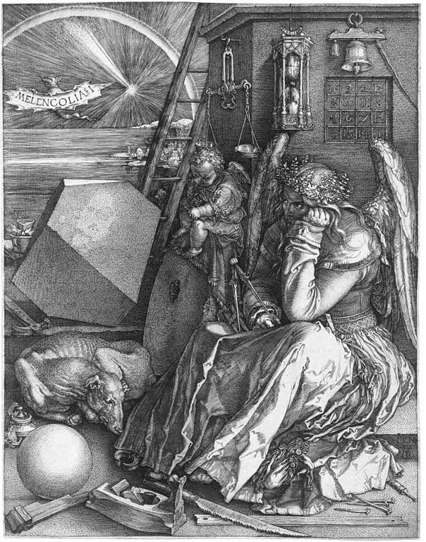

|
Art Description:
The Swing, also known as The Happy Accidents of the Swing, is an 18th-century oil painting by
Jean-Honoré Fragonard in the Wallace Collection in London. It is considered to be one of the
masterpieces of the Rococo era, and is Fragonard's best known work.
|
|
|
Art Description:
The Great Wave off Kanagawa , also known as The Great Wave or simply The Wave, is a woodblock
print by the Japanese ukiyo-e artist Hokusai. It was published sometime between 1829 and 1833 in
the late Edo period as the first print in Hokusai's series Thirty-six Views of Mount Fuji.
It is Hokusai's most famous work and is often considered the most recognizable work of Japanese
art in the world.
|
|
|

Art Description:
Melencolia I is a 1514 engraving by the German Renaissance artist Albrecht Dürer.
This is a print in one of four woodcut series that illustrate "The Apocalypse",
the "Passion of Christ", and the "Life of Mary." The print's central subject is an
enigmatic and gloomy winged female figure thought to be a personification of melancholia - melancholy. Holding her head in her hand, she stares past the busy scene in front of her. The area is strewn with symbols and tools associated with craft and carpentry, including an hourglass, weighing scales, a hand plane, a claw hammer, and a saw. Other objects relate to alchemy, geometry or numerology. Behind the figure is a structure with an embedded magic square, and a ladder leading beyond the frame. The sky contains a rainbow, a comet or planet, and a bat-like creature bearing the text that has become the print's title.
|
|